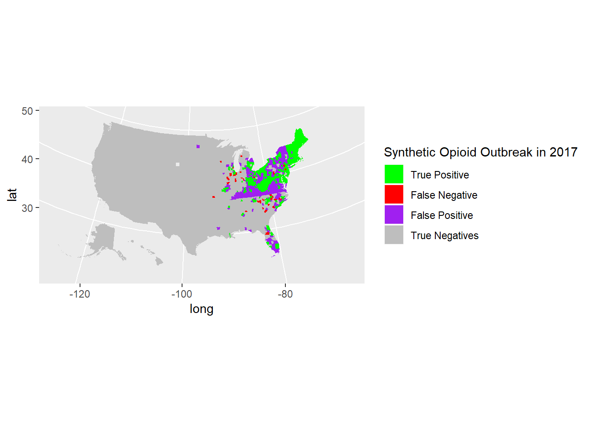
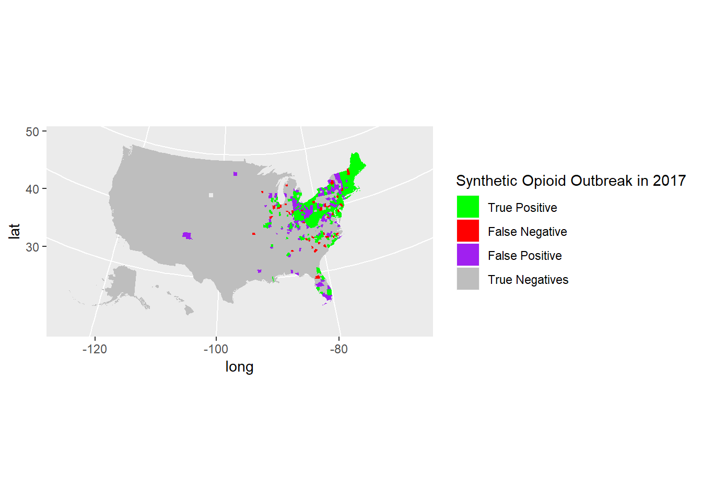

Chapter 4 Analysis
4.1 In This Section
We want to see how effectively we can predict 2017 county-level synthetic opioid death rates using a simple linear regression approach.
4.2 Imputation and Transformation
For some of our potential variables, we want to impute some missing values. For a few, as well, such as population density, we also want to log transform them.
#df$log_average_pill_count_per_100000[df$log_average_pill_count_per_100000 == -Inf | is.na(df$log_average_pill_count_per_100000)] <- median(df$log_average_pill_count_per_100000, na.rm = T)
df$unemployment_rate[is.na(df$unemployment_rate)] <- mean(df$unemployment_rate, na.rm = T)
df$median_household_income[is.na(df$median_household_income)] <- mean(df$median_household_income, na.rm = T)
df$median_household_income <- log(df$median_household_income)## Warning in log(df$median_household_income): NaNs produceddf$proportion_poverty[is.na(df$proportion_poverty)] <- mean(df$proportion_poverty, na.rm=T)
df$proportion_uninsured[is.na(df$proportion_uninsured)] <- mean(df$proportion_uninsured, na.rm = T)
df$proportion_homeowners_35perc_income[is.na(df$proportion_homeowners_35perc_income)] <- mean(df$proportion_homeowners_35perc_income, na.rm = T)
df$proportion_high_school_or_greater[is.na(df$proportion_high_school_or_greater)] <- mean(df$proportion_high_school_or_greater, na.rm = T)
df$proportion_white[is.na(df$proportion_white)] <- mean(df$proportion_white, na.rm = T)
df$population_density <- log(df$population_density)
df$population_density[df$population_density == -Inf | is.na(df$population_density)] <- median(df$population_density, na.rm = T)4.3 Neighboring Counties
We also want to generate a few additional variables that articulate the impact of synthetic opioid on neighboring counties. While we previously generated gravity variables, these are a function of both a county’s death rate and their neighbors. We want to generate variable(s) which simply articulate neighboring county rates. Here we create two new variables, one which measures the highest synthetic opioid overdose death rate of a county’s neighbors (continuous) and a second variable which measures (T/F) if any of a county’s neighbors exceed a certain threshold.
threshold <- 10
df_counties <- read.table("Data/county_adjacency.txt", sep = '\t', header = F)
cnty <- NA
df$neighbor_synthetic_outbreak <- F
df$neighbor_highest_synthetic_opioid_death_rate <- 0
for(i in 1:nrow(df_counties)){
if(!is.na(df_counties$V2[i])){
cnty <- df_counties$V2[i]
}else{
df_counties$V2[i] <- cnty
}
}
for(fips in unique(df_counties$V2)){
neighbors <- df_counties[df_counties$V2 == fips,][-1,]
for(year in 2010:2017){
highest <- 0
for(fips_neighbor in unique(neighbors$V4)){
if(length(df$synthetic_opioid_crude_death_rate[df$year == year & df$county_code == fips_neighbor]) && df$synthetic_opioid_crude_death_rate[df$year == year & df$county_code == fips_neighbor] > highest){
highest <- df$synthetic_opioid_crude_death_rate[df$year == year & df$county_code == fips_neighbor]
}
}
df$neighbor_highest_synthetic_opioid_death_rate[df$county_code == fips & df$year == year] <- highest
}
}
df$neighbor_synthetic_outbreak[df$neighbor_highest_synthetic_opioid_death_rate >= threshold] <- T4.4 A Simple Regression Model
4.4.1 Defining Our Initial Regression Equation
To begin, we start with a very simple model. We presume that the previous years synthetic opioid death rate will be highly predictive of the next year. We imagine that annual changes will be a function of time (as the epidemic has spread, the dynamics of the epidemic have changed) as well as the proximity of the epidemic. As such, we have included both year (continuous) and the highest synthetic opioid death rate of a neighbor (continuous) as interaction terms.
func <- next_year_synthetic_opioid_death_rate ~ (synthetic_opioid_crude_death_rate
#neighbor_synthetic_outbreak +
#heroin_crude_death_rate +
#cocaine_crude_death_rate +
#meth_crude_death_rate +
#unemployment_rate +
#proportion_poverty +
#proportion_white +
#proportion_high_school_or_greater +
#hep_c_mortality_rate +
#urbanicity +
#log_population_density +
#police_violence
)*(year + neighbor_synthetic_outbreak)4.4.2 Running the Model and Predicting
So, first we need our training data. Essentially, our goal is to see if we can use 2016 county-level data to predict 2017 synthetic opioid death rates. So our training data will be all data prior to this. We will train a linear regression model on this data. Then we will use the model on the 2016 dataset to predict 2017 synthetic death rate.
4.4.3 Evaluating Model Performance
4.4.3.1 Continuous Metrics
First, we want to see how well the model did at predicting the 2017 synthetic opioid crude deat rate. Here we present a series of metrics which reflect on the performance.
## some counties in Alaska did not have enough data to make predictions so they are excluded using this line of code
test_data <- test_data[!is.na(test_data$predicted_synthetic_opioid_death_rate),]
## MAE
sum <- 0
for(i in 1:nrow(test_data))
{
sum <- sum + abs(test_data$next_year_synthetic_opioid_death_rate[i] - test_data$predicted_synthetic_opioid_death_rate[i])
}
MAE <- sum/nrow(test_data)
## RMSE
sum <- 0
for(i in 1:nrow(test_data))
{
sum <- sum + (test_data$next_year_synthetic_opioid_death_rate[i] - test_data$predicted_synthetic_opioid_death_rate[i])^2
}
sum <- sum/nrow(test_data)
RMSE <- sqrt(sum)
## R squared
mean_outcome <- sum(test_data$predicted_synthetic_opioid_death_rate)/nrow(test_data)
ss_tot <- 0
ss_res <- 0
for(i in 1:nrow(test_data))
{
ss_tot <- ss_tot + (test_data$next_year_synthetic_opioid_death_rate[i] - mean_outcome)^2
ss_res <- ss_res + (test_data$next_year_synthetic_opioid_death_rate[i] - test_data$predicted_synthetic_opioid_death_rate[i])^2
}
r_squared <- 1 - (ss_res/ss_tot)
pearsons <- cor(test_data$next_year_synthetic_opioid_death_rate, test_data$predicted_synthetic_opioid_death_rate)
spearman <- cor(test_data$next_year_synthetic_opioid_death_rate, test_data$predicted_synthetic_opioid_death_rate, method = "spearman")
test_data$pred_diff <- abs(test_data$next_year_synthetic_opioid_death_rate - test_data$predicted_synthetic_opioid_death_rate)
titles <- c("R Squared","RMSE","MAE","Pearson's R","Spearman's rho")
cont_metrics <- as.data.frame(matrix(c(r_squared, RMSE, MAE, pearsons, spearman), nrow = 1))
colnames(cont_metrics) <- titles
cont_metrics## R Squared RMSE MAE Pearson's R Spearman's rho
## 1 0.6449826 4.979847 2.446574 0.8278455 0.9015019

4.4.3.2 Categorical Metrics
We predicted a continuous outcome, but it is of interest to simply ask if our model correctly identified counties whose death rate exceeded a certain threshold. For example, it may be of interest to see how well our model identified counties whose deeath rate exceeded 10 per 100,000. The following code calculates this, identifying true positives, true negatives, false positives, false negatives, and accompanying statistics of accuracy.
test_data$actual_outbreak <- F
test_data$actual_outbreak[test_data$next_year_synthetic_opioid_death_rate >= 10] <- T
test_data$predict_outbreak <- F
test_data$predict_outbreak[test_data$predicted_synthetic_opioid_death_rate >= 10] <- T
test_data$final_evaluation <- 5
table(test_data$actual_outbreak, test_data$predict_outbreak)##
## FALSE TRUE
## FALSE 2330 422
## TRUE 35 355true_pos <- 0
false_neg <- 0
true_neg <- 0
false_pos <- 0
for(i in 1:nrow(test_data)){
if(test_data$actual_outbreak[i]){
#if there is an outbreak
if(test_data$predict_outbreak[i]){
## true positive
true_pos <- true_pos + 1
test_data$final_evaluation[i] <- 1
}else{
## false negative
false_neg <- false_neg + 1
test_data$final_evaluation[i] <- 2
}
}else{
if(test_data$predict_outbreak[i]){
## false positive
false_pos <- false_pos + 1
test_data$final_evaluation[i] <- 3
}else{
## true_negative
true_neg <- true_neg + 1
test_data$final_evaluation[i] <- 4
}
}
}
positive_predicted_value <- true_pos/(true_pos + false_pos)
negative_predicted_value <- true_neg/(true_neg + false_neg)
sensitivity <- true_pos/(true_pos + false_neg)
specificity <- true_neg/(true_neg + false_pos)
accuracy <- (true_pos + true_neg)/(true_neg + true_pos + false_pos + false_neg)
titles <- c("True Positives","False Positives","True Negatives","False Negatives","PPV","NPV", "Senisitivity","Specificity","Accuracy")
eval_table <- as.data.frame(matrix(c(true_pos, false_pos, true_neg, false_neg, positive_predicted_value, negative_predicted_value, sensitivity, specificity, accuracy),nrow=1))
colnames(eval_table) <- titles
eval_table ## True Positives False Positives True Negatives False Negatives PPV
## 1 355 422 2330 35 0.4568855
## NPV Senisitivity Specificity Accuracy
## 1 0.9852008 0.9102564 0.846657 0.8545512
4.5 A Multiple Regression Model
4.5.1 Defining Our Initial Regression Equation
Now, it is also of interest to see if including a series of covariates to our model may improve performance. For starters, we are just going to throw a bunch in and see. Then we will replicate what we did for the simple model.
func <- next_year_synthetic_opioid_death_rate ~ (synthetic_opioid_crude_death_rate +
heroin_crude_death_rate +
cocaine_crude_death_rate +
meth_crude_death_rate +
unemployment_rate +
proportion_poverty +
proportion_white +
proportion_high_school_or_greater +
hep_c_mortality_rate +
urbanicity +
log_population_density +
police_violence
)*(year + neighbor_synthetic_outbreak)4.5.2 Running the Model and Predicting
So, first we need our training data. Essentially, our goal is to see if we can use 2016 county-level data to predict 2017 synthetic opioid death rates. So our training data will be all data prior to this. We will train a linear regression model on this data. Then we will use the model on the 2016 dataset to predict 2017 synthetic death rate.
4.5.3 Evaluating Model Performance
4.5.3.1 Continuous Metrics
First, we want to see how well the model did at predicting the 2017 synthetic opioid crude deat rate. Here we present a series of metrics which reflect on the performance.
## some counties in Alaska did not have enough data to make predictions so they are excluded using this line of code
test_data <- test_data[!is.na(test_data$predicted_synthetic_opioid_death_rate),]
## MAE
sum <- 0
for(i in 1:nrow(test_data))
{
sum <- sum + abs(test_data$next_year_synthetic_opioid_death_rate[i] - test_data$predicted_synthetic_opioid_death_rate[i])
}
MAE <- sum/nrow(test_data)
## RMSE
sum <- 0
for(i in 1:nrow(test_data))
{
sum <- sum + (test_data$next_year_synthetic_opioid_death_rate[i] - test_data$predicted_synthetic_opioid_death_rate[i])^2
}
sum <- sum/nrow(test_data)
RMSE <- sqrt(sum)
## R squared
mean_outcome <- sum(test_data$predicted_synthetic_opioid_death_rate)/nrow(test_data)
ss_tot <- 0
ss_res <- 0
for(i in 1:nrow(test_data))
{
ss_tot <- ss_tot + (test_data$next_year_synthetic_opioid_death_rate[i] - mean_outcome)^2
ss_res <- ss_res + (test_data$next_year_synthetic_opioid_death_rate[i] - test_data$predicted_synthetic_opioid_death_rate[i])^2
}
r_squared <- 1 - (ss_res/ss_tot)
pearsons <- cor(test_data$next_year_synthetic_opioid_death_rate, test_data$predicted_synthetic_opioid_death_rate)
spearman <- cor(test_data$next_year_synthetic_opioid_death_rate, test_data$predicted_synthetic_opioid_death_rate, method = "spearman")
test_data$pred_diff <- abs(test_data$next_year_synthetic_opioid_death_rate - test_data$predicted_synthetic_opioid_death_rate)
titles <- c("R Squared","RMSE","MAE","Pearson's R","Spearman's rho")
cont_metrics <- as.data.frame(matrix(c(r_squared, RMSE, MAE, pearsons, spearman), nrow = 1))
colnames(cont_metrics) <- titles
cont_metrics## R Squared RMSE MAE Pearson's R Spearman's rho
## 1 0.686067 4.63533 2.018462 0.8307833 0.9049744

4.5.3.2 Categorical Metrics
We predicted a continuous outcome, but it is of interest to simply ask if our model correctly identified counties whose death rate exceeded a certain threshold. For example, it may be of interest to see how well our model identified counties whose deeath rate exceeded 10 per 100,000. The following code calculates this, identifying true positives, true negatives, false positives, false negatives, and accompanying statistics of accuracy.
test_data$actual_outbreak <- F
test_data$actual_outbreak[test_data$next_year_synthetic_opioid_death_rate >= 10] <- T
test_data$predict_outbreak <- F
test_data$predict_outbreak[test_data$predicted_synthetic_opioid_death_rate >= 10] <- T
test_data$final_evaluation <- 5
table(test_data$actual_outbreak, test_data$predict_outbreak)##
## FALSE TRUE
## FALSE 2541 209
## TRUE 40 350true_pos <- 0
false_neg <- 0
true_neg <- 0
false_pos <- 0
for(i in 1:nrow(test_data)){
if(test_data$actual_outbreak[i]){
#if there is an outbreak
if(test_data$predict_outbreak[i]){
## true positive
true_pos <- true_pos + 1
test_data$final_evaluation[i] <- 1
}else{
## false negative
false_neg <- false_neg + 1
test_data$final_evaluation[i] <- 2
}
}else{
if(test_data$predict_outbreak[i]){
## false positive
false_pos <- false_pos + 1
test_data$final_evaluation[i] <- 3
}else{
## true_negative
true_neg <- true_neg + 1
test_data$final_evaluation[i] <- 4
}
}
}
positive_predicted_value <- true_pos/(true_pos + false_pos)
negative_predicted_value <- true_neg/(true_neg + false_neg)
sensitivity <- true_pos/(true_pos + false_neg)
specificity <- true_neg/(true_neg + false_pos)
accuracy <- (true_pos + true_neg)/(true_neg + true_pos + false_pos + false_neg)
titles <- c("True Positives","False Positives","True Negatives","False Negatives","PPV","NPV", "Senisitivity","Specificity","Accuracy")
eval_table <- as.data.frame(matrix(c(true_pos, false_pos, true_neg, false_neg, positive_predicted_value, negative_predicted_value, sensitivity, specificity, accuracy),nrow=1))
colnames(eval_table) <- titles
eval_table ## True Positives False Positives True Negatives False Negatives PPV
## 1 350 209 2541 40 0.6261181
## NPV Senisitivity Specificity Accuracy
## 1 0.9845021 0.8974359 0.924 0.9207006